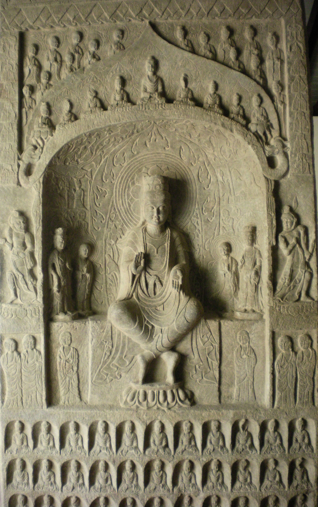
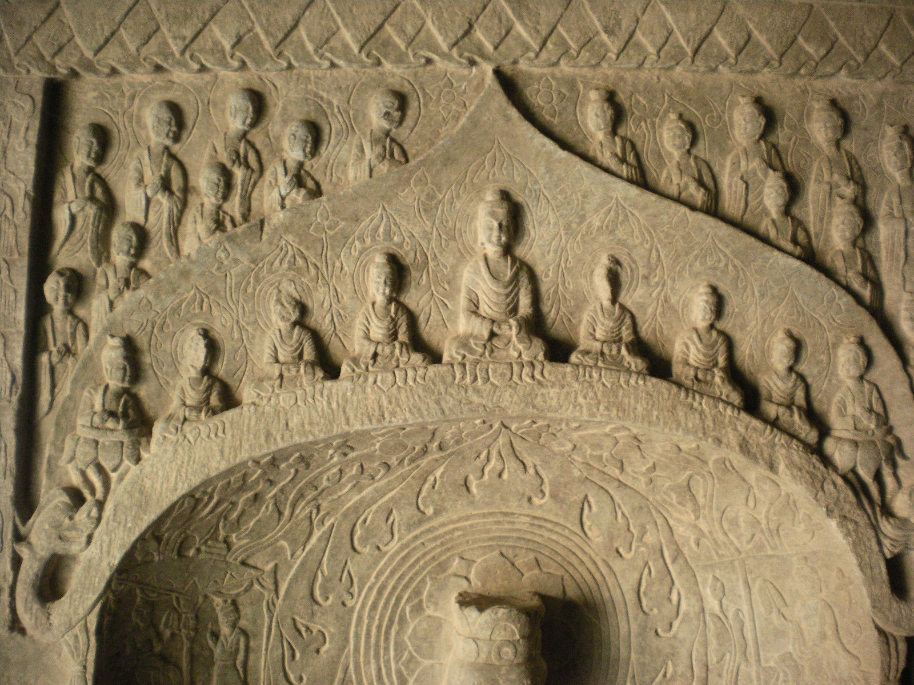
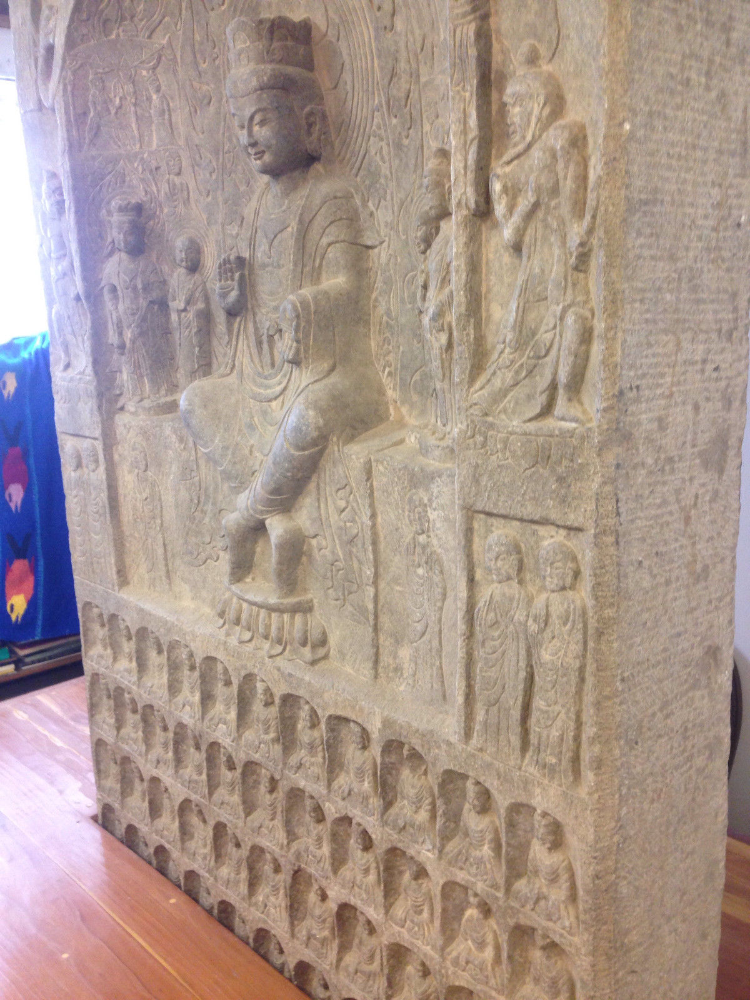
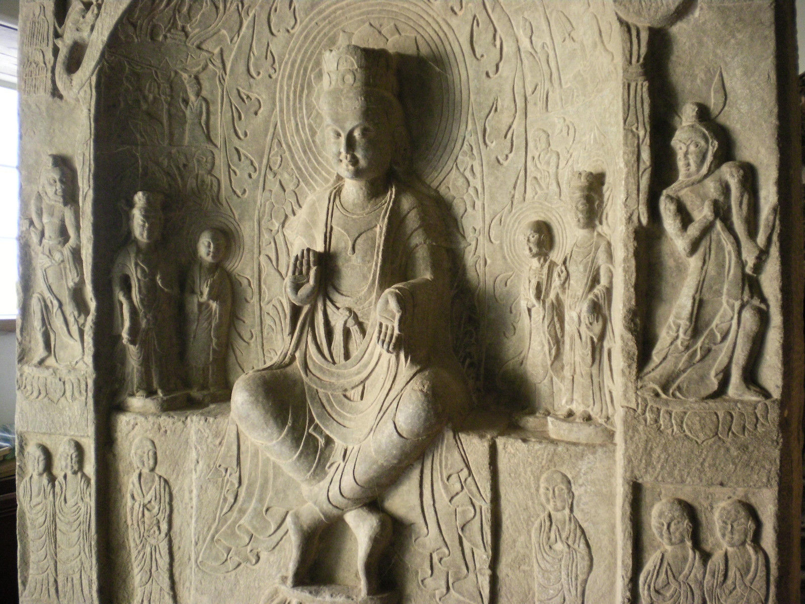

The long-lasting interchange between the beliefs, practices, and imagery associated with the Indian religion of Buddhism and those found in Chinese traditions remains one of the most fascinating dialogues in world history.1 Buddhism began with the life of one man, Siddhartha Gautama, who died some time around 400 B.C.E. Now revered as the Buddha Shakyamuni, Siddhartha was born in the northeastern reaches of the Indian subcontinent (now Nepal) during a time of great economic, social, and cultural turmoil. According to a worldview prevalent at the time, he had already lived numerous lives, some in human form and some as an animal. In the Buddhist perspective, the merit he had acquired during those virtuous lives enabled him to be reborn one last time, to attain enlightenment (or become a Buddha), and to share with others the wisdom he had gained.
Written versions of his biography, which postdate his actual life by centuries, indicate that he was born into a family of some status and was deliberately sheltered from the harsh realities of existence because a fortune-teller had predicted at his birth that he would become either a secular leader or a spiritual teacher; the former was deemed the preferable path, and every attempt was made to wed young Siddhartha to the pleasures of life. Nonetheless, Siddhartha managed to escape his pampered cocoon four times, witnessing various unpleasant states of humanity-sickness, old age, and death-and encountering, the final time, one of the many ascetic-teachers who wandered India during this period. After grappling with these troubling revelations, Siddhartha understood that life is inevitably difficult and often painful, and he resolved to leave his luxurious home, beautiful wife, and newborn Opposite: Detail of Water-Moon Avalokiteshvara (cat. no. 24).
In order to study reality more deeply and learn how to transcend the endless cycle of death and rebirth. He practiced austerities with various teachers and groups of students for about six years before deciding that such activities would not lead to the understanding he sought. After accepting some nourishment, he sat under a fig tree (known henceforth as the bodhi tree; bodhi means "enlightenment" in Sanskrit) and vowed to meditate there until he had achieved enlightenment. Despite repeated attempts by the forces of evil to thwart him with distractions such as gorgeous women and violent storms, Siddhartha persevered, and when he finished his meditation, he had gained the supernal knowledge that he sought. After some consideration, he decided to share this understanding with others, and he began to teach, quickly attracting disciples, including some individuals who had previously practiced austerities with him and had initially disparaged his decision to find a different path.
The understanding that Siddhartha achieved is often termed the Four Noble Truths: existence is fundamentally painful; this pain is the result of desire for things and states of being; the pain can be relieved; and a group of eight practices known as the Eightfold Path is the cure. This path stresses the development of right and proper perceptions, thought, speech, actions, livelihood, effort, mindfulness, and concentration. It is designed to guide a practitioner through multiple lifetimes, ideally as a human being, and help him escape or transcend the potentially endless cycle of rebirth and become a Buddha. Siddhartha's own escape, known as his parinirvana-his passage into the transcendent state of nirvana-occurred when he was about eighty years old.
Siddhartha's teachings were preserved by his followers, who formalized monastic traditions and began, over time, to record the history, teachings, and activities of the historical Buddha. Today, these writings survive primarily in three languages: Pali, an Indian language designed for written documents that was also used in Sri Lanka and Southeast Asia; Chinese, used in Korea and Japan as well as in China proper; and Tibetan. The literature is voluminous. For example, the Chinese-language version of the Tripitaka (literally, "three baskets"-the name for the Buddhist canon), which is best known today in a version assembled in Japan in the early twentieth century,2 contains more than 3,200 documents and, in many cases, multiple versions of a particular text. These documents are known as sutras or tantras if they record teachings and as shastras if they offer exegesis.
In addition to preserving the biography and teachings of the historical Buddha, some of the texts provide information regarding the history and development of the Buddhist tradition. Not long after Siddhartha's death, disagreements arose, and three councils were held by his disciples to determine the proper means of transmitting his teachings and the appropriate behavior of clerics and laypeople. One of these early meetings is said to have occurred under the auspices of Ashoka (r. ca. 273-232 B.C.E.), the famed leader of the extensive Mauryan Empire, which marked the first unification of the Indian subcontinent under one ruler. Ashoka, who is believed to have become a Buddhist at least partially in remorse for the suffering caused by the warfare that preceded this unification, is credited with helping to spread Buddhism throughout South Asia as well as into Southeast Asia. He is also said to have sent missionaries west, though with no apparent effect. Texts also record that a fourth council was convened by Kanishka I (r. ca. 127- 47 C.E.), one of the most powerful rulers of the Kushan Empire (2nd century B.C.E.-early 3rd century c.E.), which included much of what is now northern India, Pakistan, and Afghanistan.
There are no images of the Buddha in human form in the artistic remains dating from the period of Ashoka's rule.3 Instead, the Buddha is represented symbolically, as a tree, a footprint, an empty throne, or a stupa or burial mound. Stupas, which inspired the development of the pagoda in China, Korea, and Japan, were used to mark the remains of Siddhartha and his followers and eventually became symbols for the immanence of the historical Buddha. Representations of the Buddha in human form appeared in India and Gandhara (roughly, present-day Pakistan) around the second century C.E., at about the time ofKanishka I's reign. The first figural depictions of the Buddha emerged from two different stylistic traditions: one is associated with centers in Gandhara; the other flourished around the city of Mathura in northern India. There are stylistic differences between the sculptures produced in Gandhara, which show an awareness of Greco-Roman traditions first introduced with Alexander the Great's conquest of northern Afghanistan (ca. 327 B.C.E.) and maintained through ties with the Roman Empire, and those made in Mathura, which adhere more closely to Indic traditions.
EARLY CHINESE IMAGERY: SECOND TO FOURTH CENTURY The earliest Chinese images of the Buddha date to the second half of the second century C.E., soon after the development of such icons in South Asia, and there was no period in China in which Shakyamuni was represented primarily through symbols. Both historical records and visual evidence attest to Chinese knowledge of Buddhism in the first and second centuries c.E.,4 during the Eastern Han dynasty (25-220 C.E.), when China rivaled Rome in size, population, wealth, and influence.
By the mid-second century, an important Buddhist center had been founded in the dynasty's capital city, Luoyang, in Henan Province, attracting foreign monks as well as supportive laypeople, both foreign and Han Chinese. An Shigao, the first translator of Buddhist texts into Chinese, was one of several famous monks working in this center, as was the slightly younger Lokakshema; both had come from Parthia, a kingdom in northwestern Persia. Lokakshema was responsible for translating several works that stressed the practice of meditation and the taking of certain vows, particularly those intended to help others gain enlightenment.5 These texts, which are preserved principally in their Chinese translations, include one of the earliest records of the making of images of the Buddha: a version of the Perfection of Wisdom Sutra (Prajnaparamita) states that such images were made to help men revere the Buddha and therefore acquire religious merit.6 These translations also provide some of the earliest documentation of practices that are now catalogued under the term Mahayana Buddhism. Unlike earlier Buddhist traditions, formerly called Hinayana (literally, "lesser vehicle") but now known as Nikaya, the embryonic Mahayana sutras have a strong visual component that stresses the ability to see the Buddha and other divinities as a result of meditation and related practices.
They also celebrate the role of the bodhisattva, a being whose essence (sattva) is spiritual wisdom (bodhi) and who has attained enlightenment in order to help others. Although the issue is still a subject of extensive scholarly debate, it is hard to believe that changes in Buddhist practice preserved in Chinese translations of the second century C.E. have no relationship to the creation of an anthropomorphic image of the Buddha in India at approximately the same time: in other words, it is interesting that the earliest Chinese representations of the Buddha date to the late second century c.E., about the same time they appeared farther west. These representations are associated with a funerary cult in which tombs, often enormous ones, were constructed to house the deceased and were furnished with either bronze and lacquer vessels or pottery facsimiles of such worldly goods. One of the best known early Chinese Buddhas (fig. 2) is carved on the lintel of a tomb at Mahao, in Sichuan Province.7 This figure derives from images made in Gandhara and related cen ters, such as that found seated at the top of a reliquary excavated in 1908 (fig. 4). Both Buddhas are seated in a meditative posture and hold their right hands up with the palms facing outward in a gesture of reassurance known as abhaya mudra. Both have haloes, a symbol that defines divinity in many cultures, and both wear large rectangular shawls that cover the shoulders. The shawl is a traditional article of South Asian monastic clothing.